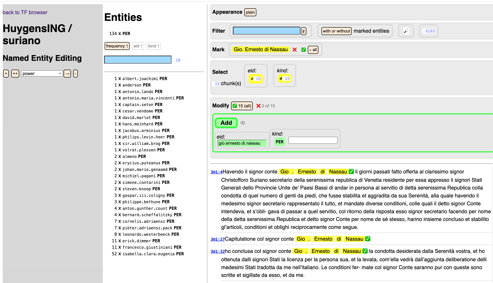

Module tf.about.annotate
Manual Annotation
Named Entity Recognition is a task for which automated tools exist. But in a smallish, well-known corpus, such tools tend to create more noise than signal. If you know which names to expect and in what forms they occur in the corpus, it might be easier to mark them by hand.
TF contains a tool to help you with that. The basic thing it does is to find all occurrences of a pattern you specify, and then assign an identifier and a kind to all those occurrences.
For example, it finds all Ernesto di Nassau occurrences and it assigns
identity ernesto.di.nassau and kind PER to them.
There are two interfaces. One runs inside the TF browser, and it enables you to search and mark repeatedly, to apply additions and deletions of named entities to restricted sets of occurrences, so that you can make individual exceptions to the rules.
The other is an API, that you can call, typically from inside a Jupyter notebook, by which you can automate things to the next level. You can prepare a spreadsheet with entities and surface forms and have the tool execute that spreadsheet against the corpus.
Here is what the browser interface looks like:

Work-in-progress
This is a tool where you can add entity annotations to a corpus.
These annotations consist of a new nodes of a new type (ent, or entity) and
features that give information about those nodes.
Supported corpora
This tool is being developed against the
HuygensING/suriano corpus.
Yet it is meant to be usable for all TF corpora. No corpus knowledge is baked in.
If corpus specifics are needed, it will be fetched from the already present TF
configuration of that corpus.
And where that is not sufficient, details are put in ner/config.yaml, which
can be put next to the corpus.
I have tested it for the
ETCBC/bhsa (Hebrew Bible) corpus, and the
machinery works.
But it remains to be seen whether the tools is sufficiently ergonomic for that
corpus.
See also the following Jupyter Notebooks that show the work-in-progress:
-
Suriano
-
BHSA
Ergonomics of annotation
We try to reduce the work of manual annotations as much as possible. It is a balancing act between automating as much as possible, but not so much that you miss the fine points in your corpus.
We need to gather experience in order to arrive at a truly usable tool.
We are going to mark up the
HuygensING/suriano corpus in this way and hope
to acquire a lot of experience in the process.
Delivery of annotation data
But how exactly are those new nodes and features delivered?
This is work in progress!
Currently, TF supports data modules on top of a corpus, provided the modules consist of features that annotate the existing nodes in the corpus.
Here we have a new situation: we not only have new features, but also a new node type.
TF has not (yet) a module system by which you can invoke such data modules on top of an existing TF dataset.
What do we have, though?
TF has already functions to add new types with their features to a dataset:
tf.dataset.modify. This will create a completely new and separate data set out of
the existing dataset and the new nodes and features.
We deliver the annotation data as TSV files, where each line specifies a new (entity) node, and the columns specify the values of the entity features for that node, plus the slots that are linked to that node.
With this information in hand, it is possible
- to call the
tf.dataset.modifyfunction or - work in a Jupyter notebook and use the entity data in whatever way you like.
In the future I intend to broaden the concept of data module to modules that introduce
new node types. In order to do that I have to write code for TF to include
the module data in the existing otype and oslots features and, most of all,
to generate adapted computed features such as __levup__ and __levdown__.
See tf.core.prepare .
Concepts
Entities
An entity is a thing in the real world that is referenced by specific pieces of text in the corpus. Think of persons, places, organizations.
We mark up those text occurrences by creating nodes for those locations in the corpus
and assigning feature values to the features eid (entity identifier) and kind
(entity kind such as PER, LOC, ORG).
How entities exist in a corpus
Your corpus may already have entities, marked up by an automatic tool such as
Spacy (see tf.tools.myspacy). In that case there is already a node type
ent and features eid and kind.
When you make manual annotations, the annotations are saved as TSV files.
In order to create nodes for them in your corpus, you can use those TSV files,
read off the feature information, and invoke tf.dataset.modify function to
generate new nodes and add them to your corpus.
In a next iteration, we'll include a function that will do this for you.
Occurrences and identifiers
Entity nodes mark the text occurrences that refer to outside entities in the world. Different occurrences have different entity nodes, but they may refer to the same entity in the world. It is the entity identifier that unifies the various occurrences that refer to the same entity in the world. We do not have nodes in the corpus that correspond 1-1 to the real world entities. The entity nodes correspond to the occurrences.
The same occurrence may have multiple entity nodes.
For example, if an occurrence Amsterdam refers to a location, a city council,
and a ship at the same time, you might mark it up as
('amsterdam', 'LOC')('amsterdam', 'ORG')('amsterdam', 'SHIP')
In fact, an entity in the real word is not solely identified by the eid feature,
but by the combination of the eid and kind features.
Of course, you are free to make the identifiers distinct if the same name refers to entities of different kinds.
Entity sets
When you are in the process of marking entities, you create an entity set. You can give this a name, and the data you create will be stored under that name.
For annotators
Go to the manual for annotating in the TF browser:
tf.about.annotateBrowser
For programming annotators
Go to the manual for annotating in in a Jupyter Notebook, using the API:
tf.browser.ner.ner
Or see this
example notebook.
For corpus maintainers
This tool needs additional input data and produces additional output data.
The input data can be found in the directory ner next to the actual tf directory
from where the program has loaded the corpus data.
Depending on how you invoke TF, this can be in a clone of the repository of the corpus, or an auto-downloaded copy of the data.
If you work with the corpus in a local clone, you'll find it under
~/github/HuygensING/suriano (in this example).
If you work in an auto-downloaded copy of the corpus, it is under
~/text-fabric-data/github/HuygensING/suriano (in this example).
Note that
- the part
githubmay be another back-end in your situation, e.g.gitlaborgitlab.huc.di.nl; - the part
HuygensINGmay be another organization, e.g.annotation, or wherever your corpus is located; surianomight also be another repo such asdescartes, or where ever your corpus is located.
The output data can be found a directory _temp/ner where the _temp
directory is located next to the ner directory that holds the input data.
Input data
There are several bits of information needed to set up the annotation tool. They are corpus specific, so they must be specified in a YAML file in the corpus repository.
As an example, we refer to the Suriano corpus.
config.yamlin directoryner;- optional Excel sheets in directory
ner/sheetswith instructions to bulk-annotate entities.
Concerning ner/config.yaml: it has the following information:
-
entityType: the node type of entities that are already in the corpus, possibly generated by a tool like Spacy; -
entitySet: a name for the pre-existing set of entities; -
bucketType: the annotation works with paragraph-like chunks of text of your corpus. These units are called buckets. Here you can specify which node type must be taken as the buckets. -
features: the features that contain essential information about the entities. Currently, we specify only 2 features. You may rename these features, but we advise not modify the number of features. Probably, in later releases, you'll have more choice here. -
keywordFeatures: some features have a limited set of values, e.g. the kind of entity. Those features are mentioned under this key. -
defaultValues: provide default values for the keyword features. The tool also provides a default for the first feature, the entity identifier, basically a lower case version of the full name where the parts of the name are separated by dots. -
spaceEscaped: set this to True if your corpus as tokens with spaces in it. You can then escape spaces with_, for example in spreadsheets where you specify annotation instructions. -
transform: the tool can read a spreadsheet with full names and per name a list of occurrences that should be marked as entities for that name. When the full name is turned into an identifier, the identifier might become longer than is convenient. Here you can specify a replacement table for name parts. You can use it to shorten or repress certain name parts that are very generic, such asde,van,von.
Concerning the Excel sheets in ner/sheets:
-
they can be read by
NER.readInstructions(); -
you might need to
pip install openpyxlfirst; -
only the first two columns of the sheet are read, the first column is expected to have the full names, the second column is a list of surface forms that trigger the marking of an entity with this name, separated by semicolons.
Good practice
All NER input data (configuration file and Excel sheets) should reside in the
repository.
The corresponding TF app should specify in its app/config.yaml,
under provenanceSpecs:
extraData: ner
When you make a new release on GitHub of the repo, do not forget to run
A = use("HuygensING/suriano:clone", checkout="clone")
A.zipAll()
Then pick up the new ~/Downloads/github/HuygensING/suriano/complete.zip
and attach it to your new release on GitHub.
Then other users can invoke the corpus by
A = use("HuygensING/suriano")
This way there is no need to clone the repository first.
TF will auto-download the corpus, including the ner input data.
Then multiple people can work on annotation tasks on their local computers.
Output data
The results of all your annotation actions will end up in the
_temp/ner/version folder in your corpus, where version is the
TF version of your corpus.
The output data is tightly coupled to a specific version of the corpus.
Versioning
If a new versions of the corpus is published, the generated annotations
do not automatically migrate to the new version.
TF has tools to perform those migrations, but they are not fully automatic.
Whenever a new version of the corpus is produced, the producer should also
generate a mapping file from the nodes of the new corpus to the old corpus.
That will enable the migration of the annotations.
See tf.dataset.nodemaps .
Recommended practice
When the annotators are done, you need to ask them to dig out their data files and send them to you.
Then you can turn that data into new entity nodes and features and merge
them into the corpus.
This is not trivial, it involves using tf.dataset.modify.
I intend to write functions to make this task easier.
Expand source code Browse git
"""
.. include:: ../docs/about/annotate.md
"""